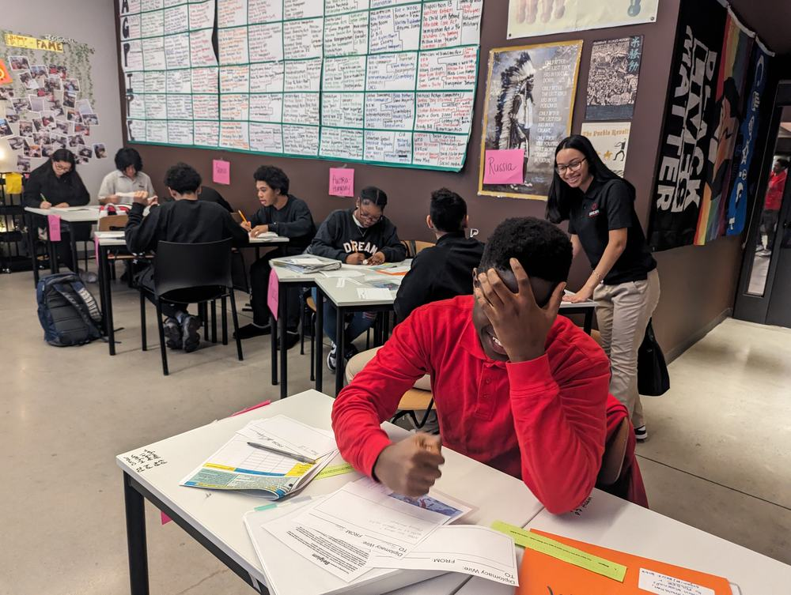
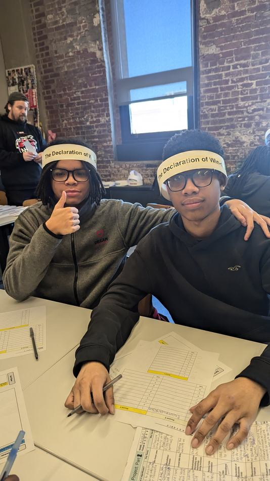
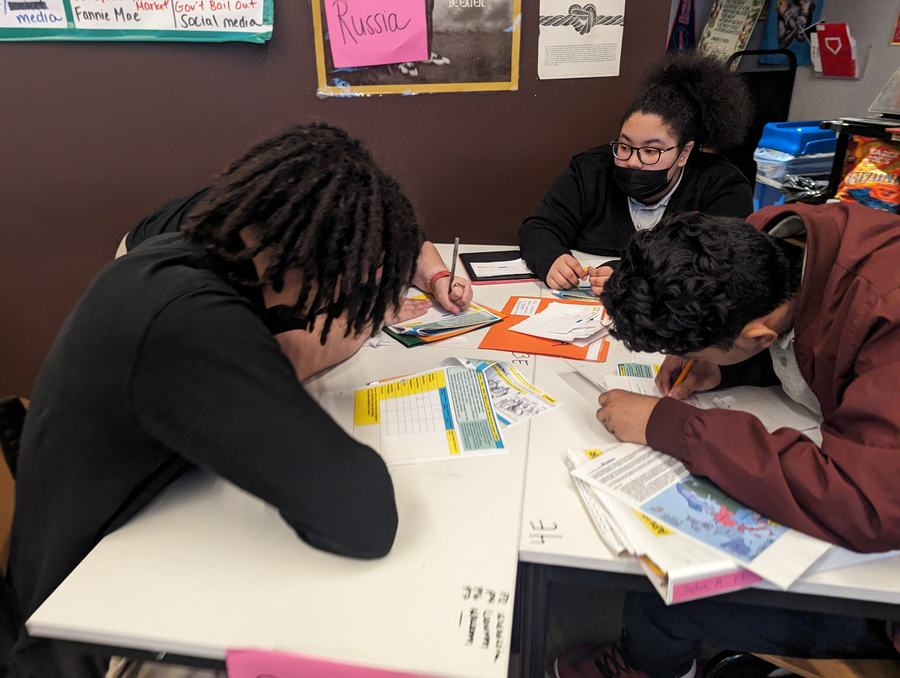
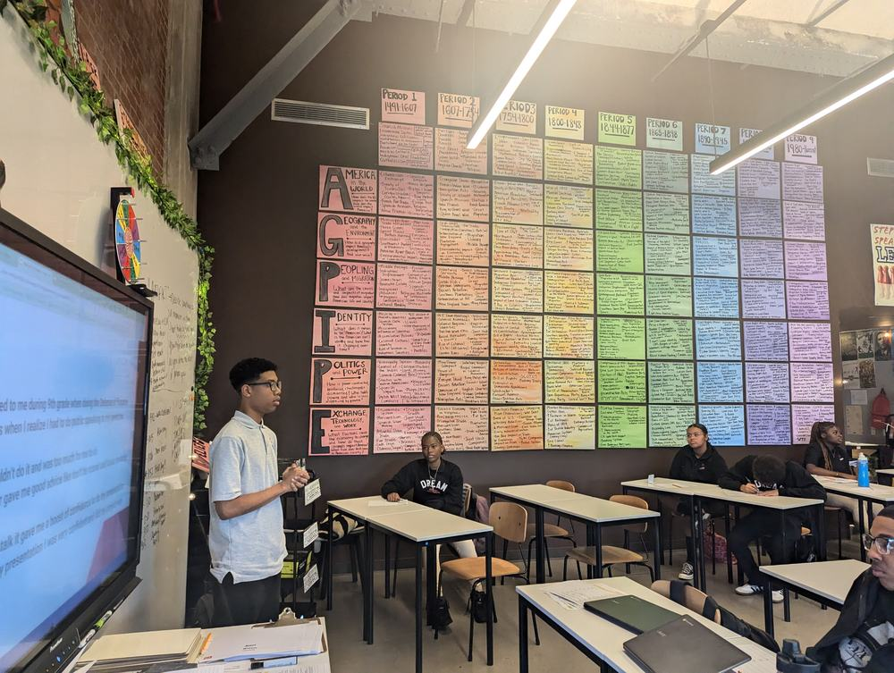
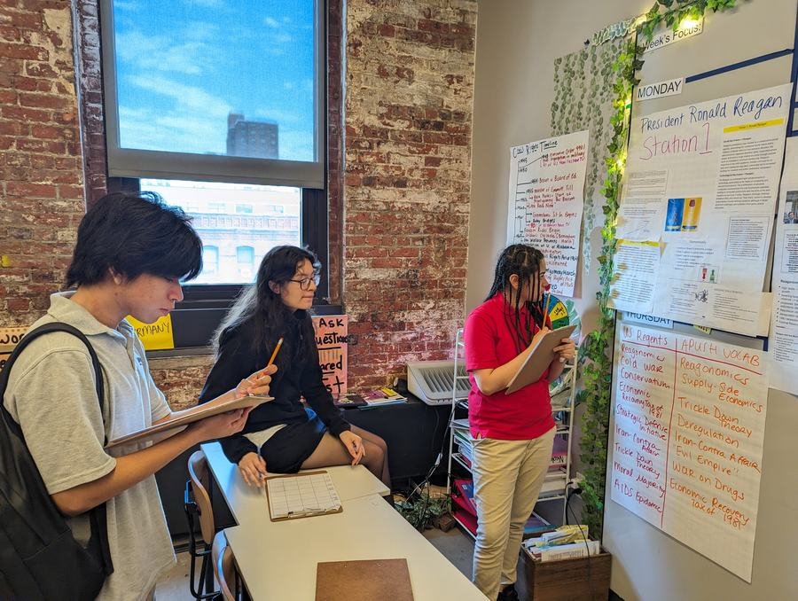

Drowning in the Record
⬦ ⬦ ⬦
Out along a farm road, a grain silo towers with the confidence of a culture that believes it has solved the problem of keeping. Inside its metal embrace, grain takes on its own physics. It settles, shifts, crusts over, hollows beneath itself, and when the surface hardens into the illusion of ground, a body can step forward believing it has found footing only to be taken under by the very abundance meant to sustain life.
The archive works the same way. This is a game about learning to read the surface before you step.
ETA-2026 · AP U.S. History · Archival Thinking
Select a role to begin · All responses logged to archive ledger
About the Project
I keep returning to the grain silo. Not because silos are interesting in themselves, but because of what they do to the problem of keeping. Storage looks like protection. Abundance looks like completeness. And then the surface hardens, and the footing disappears, and the body that stepped forward believing it had found ground gets taken under by the very accumulation meant to sustain it.
That is what the contemporary archive does to students. It arrives not only as silence or omission, which we have spent decades learning to name, but as managed saturation. A searchable, ranked, duplicated, captioned, and synthetically coherent field of traces that feels complete precisely when it is most dangerous to an unsuspecting step. What threatens students now is not only that some histories never enter the record. It is that the record arrives in their classroom as already arranged abundance, and the work of arranging it has been done before they ever open the packet.
The pedagogical problem is not simply that students analyze biased sources. It is that they are rarely taught to analyze biased source systems.
Marie Connor, Escape the Archive: Drowning in the Record (2026)This escape room is my attempt to make that prior layer of work visible and palpable. Students do not merely read about how archives organize memory. They move through differently organized surfaces of judgment, each one quietly recalibrating what feels trustworthy, what feels complete, and what feels worth carrying forward. The rooms sequence from curated scarcity into managed abundance because that is how the informational conditions of the present actually work. Official calm first, then saturation, then echo, then the smooth algorithmic surface that makes it hardest to feel anything has gone wrong at all.
What waits at the end is not mastery. It is an answerable limitation. Students are asked to name what can responsibly be said given the evidence available, the absences that remain, and the contradictions that have not resolved. They do not leave the archive clean. They learn to enter it differently.
The Theoretical Grounding
This project draws on commitments built across doctoral study at Teachers College, Columbia University, inside Professor Dani Friedrich's seminar on Memory, History, and Curriculum. The framework holds several tensions at once, and the game is designed to hold them too.
Nora (1989)
Memory is displaced into traces, sites, and mediations. What remains is no longer the warmth of repetition, but the deliberate staging of a past that must be curated, revisited, and made to speak again.
Thompson (2009)
Inherited stories do not arrive empty. They come entangled with debts, injuries, and unresolved claims that continue to structure the present and ask those who inherit them to reckon with what they oblige.
Rose (1999)
Governing is a heterogeneous field of authorities, institutions, and techniques through which subjects are taught what to treat as common sense. Schooling is where a polity teaches its members how to remember and whom to recognize.
Stoler (2009)
Imperial archives were anxious and recursive, organized through categories that had to be continuously remade. Recovery is not enough. The archive's incoherence is part of its power.
Abu El-Haj (2023)
The problem may no longer be simple denial but disavowal. Truth can be public, documented, speakable, and still politically inert. Visibility is not justice. More records do not equal consequence.
Ellsworth (2005)
Pedagogy is not the delivery of stable content but an event in which the outside is drawn into thought, producing an encounter, a topology the learner must inhabit rather than master from afar.
Trofanenko (2008)
The seduction of a single best narrative forecloses attention to the fact that the source-world itself was built. Students must learn to see that building, not just what lives inside it.
Bruyneel (2021)
U.S. public life is structured by disavowal. A political memory that requires Indigeneity to remain both foundational and faint, visible enough to stabilize the origin story, dim enough not to unsettle its present claims.
How the Game Works
Four roles, five rooms, one archive under pressure. The Lead Auditor, Evidence Keeper, Archive Analyst, and Signal Monitor approach the same historical record through genuinely different first questions. The archive itself changes depending on the disciplinary lens through which one enters it. That is not a feature of the game. It is the argument the game is making.
The rooms move from curated scarcity through broadcast saturation, echo corroboration, and algorithmic feed overload, until the final room presents an AI-generated synthesis that is smooth, coherent, and quietly devastating in what it has metabolized into clarity. Students end not by escaping the archive but by producing three written forms: a historical claim, a curation claim, and a limitation claim. The limitation claim is the one that matters most. It is not a failure of historical thinking. It is one of its hardest civic forms.
About the Creator
Doctoral Candidate, Teachers College, Columbia University · mc5830@tc.columbia.edu



Why this work
I have been teaching history in Brooklyn and the Bronx for twelve years, and for most of that time I thought the problem was what was missing from the archive. The documents that had been destroyed or never created, the voices that had been excluded from the record, the histories that school curriculum had decided did not need to be there. I still think that problem is real. But somewhere in the middle of teaching AP U.S. History in a Bronx classroom where my students were brilliant and curious and almost entirely absent from the standard archival record, I started to see a different problem layering on top of it.
The record was no longer only sparse. It was also, increasingly, everywhere. My students were swimming in it. Social media feeds full of ranked and smoothed historical content, AI summaries that arrived wearing the face of comprehensiveness, citation chains that had been repeated so many times they had calcified into the look of consensus. The question was no longer only whose histories were missing. It was also: how do you teach students to read the surface that makes the missing invisible?
I keep returning to that moment before the source packet is assembled in the history classroom, a small hush that now feels anything but neutral. By the time students are asked to source, contextualize, or corroborate a document, someone else has already decided what survives, what counts as evidence, what becomes searchable, and what stays out of view.
Marie Connor, CILR Memo, Teachers College (2025)That recognition has become the engine of this project. The escape room is not a gamified lesson on top of a curriculum. It is a pedagogical argument about where historical thinking has to begin. Not at interpretation. Earlier. At the level of what was preserved, what was captioned, what was ranked, and what was made to feel complete before a student ever touched it.
The classroom that made this necessary
When I took over the AP U.S. History program at DREAM Charter High School in the Bronx, the pass rate was three percent. Not because my students could not do the work. Because the curriculum had not been built to trust them with it. Over two years, grounded in inquiry-driven instruction and a conviction that archival thinking belongs in the hands of seventeen-year-olds in the South Bronx, the pass rate reached fifty-nine percent. That number matters. But what matters more is what happened in the room. Once students understood that the packet they were handed was itself an argument, that someone had already decided which sources counted and what the questions should be, they stopped being passive recipients of an already arranged past and started being answerable curators of it.


What drives the research
I am a doctoral candidate in the Curriculum and Teaching department at Teachers College, Columbia University. My research examines how critical archival theory reshapes the historical thinking we ask of students, shifting inquiry from interpreting primary sources toward analyzing how records are selected, mediated, preserved, and refused across time. The dissertation sits at the intersection of archival pedagogy, K-12 curriculum design, and the conditions under which evidence-making becomes part of ordinary classroom life rather than remaining a luminous exception within it.
That question is personal as much as it is scholarly. I grew up in a military family, moved constantly, graduated high school in Japan in three years, then spent several years cooking in Michelin-starred kitchens in New York before turning to teaching. All of those experiences taught me something about what it means to work inside systems that have already decided what counts, what gets preserved, and who is positioned as a knower. The kitchen has a rail that tells you what to fire and when. The archive has a packet that tells you what to read and how. The question I keep asking is who built those systems, and what would it mean to teach students to read the building itself rather than just what is inside it.
Contact
Questions about the project, requests to use it in your classroom, research inquiries, collaboration, or feedback.
Your email will only be used to respond to your message.
Connecting to archive ledger
Escape the Archive
Drowning in the Record
Choose how you enter the archive. Each role asks a different first question.
Clearance Level A
🔍Lead Auditor
Does the record say what it claims to say?
You decide whether the archive's public record matches the evidence. You review first and make final calls about what should count.
Clearance Level A
📁Evidence Keeper
What is here, and what is missing?
You track what is in the record, connect related pieces, and notice what has been left out.
Clearance Level A
👁️Archive Analyst
What does the record refuse to say?
You look for patterns, gaps, and silences. You ask what the archive includes and what its omissions might reveal.
Clearance Level A
📡Signal Monitor
Which signals are shaping your trust?
You study the information environment. You watch for bias and signals that make sources seem more trustworthy than they are.
You cannot switch roles once you begin
Educator Access
Responses are stored locally per role. Nothing leaves this device without a Sheets URL.
Prologue
The Intake Desk
Prologue: The Intake Desk
Read the document below. Answer three questions. Save your answers. Then click each bold phrase.
This exhibit presents a comprehensive account of the administrative relocation procedures implemented during the 1943 wartime period. All records have been reviewed for accuracy and completeness. The archive certifies that the materials included represent the full documentary record available for this period.
Sources include: official correspondence, administrative memoranda, photographic documentation, and government-certified witness accounts. Materials have been organized chronologically. Gaps in the record reflect voluntary non-participation by certain individuals who chose not to provide statements.
The exhibit aims to present a neutral, comprehensive account of this historical period. This is an administrative relocation record compiled for educational and research purposes.
Click each phrase. What do you notice?
Your intake questions
Answer all three. Save. Then click the bold phrases above.
Archival insight
Records do not just preserve events. They also preserve choices about how to describe them. The words a record uses can shape what feels true before you even start reading closely.
Carry this forward: What happens when a record is asking you to trust it?
Room I: The Small Record
Read both documents. Match each phrase to what you think it might be hiding. Your role task unlocks after the matching.
Official Administrative Record
Phrase Match drag or use the dropdown below
Each phrase is from the documents. Drag the term that best describes what it might be hiding. Keyboard users: Enter to select a term, Tab to a row, Enter to place.
Witness Testimony, Oral History Fragment
Read this. Then complete your task below.
Your judgment
Look at both documents and the testimony together. What does the official record make easy to believe? What does it make hard to see?
What this record cannot tell you
What questions can you not answer from these documents alone? What would a more complete record need to include?
What signals are in this record?
What in these documents is meant to make you trust them? What makes them feel official? Is that feeling earned?
Frustration recognized. There is not enough here to be certain. That is the point. Read a note about this
Archival insight
Official wording can shape what feels true. Archives do not only preserve events. They also preserve the language used to describe them, and that language is never neutral.
Carry this forward: What happens when there are many more sources, not just a few?
Room II: Many Sources
Five sources. For each one, decide: does it earn your trust, or just look like it does? Rate all five to unlock the next step.
Classified: 0 / 5
(Rate all 5 to unlock the next step)
Associated Press Wire, "Relocation Proceeds Smoothly, Officials Say"
March 24, 1943Reprinted in 47 regional newspapersPress
WRA officials report transfers proceeding ahead of schedule. Source: WRA press release. Housing described as "adequate for the circumstances."
Photograph, "Departure Platform, Union Station"
April 1943WRA official photographerOfficial
WRA caption: "Evacuees depart voluntarily for new homes in the interior." Taken and captioned by WRA. No independent press present.
Radio Broadcast, "America's Home Front" (NBC Blue Network)
March 1943NBC Blue NetworkPress
"Full cooperation, many expressed gratitude." Source stated on-air: WRA press release read verbatim.
Community Letter, Intercepted by WRA Censor
April 1943Personal correspondence, never delivered, declassified 1992Testimony
"The barracks are not what they told us. There is one stove for forty people. The children are sick. We have been told we cannot leave. I am writing because I do not know if anyone will read this."
Internal WRA Survey, "Evacuee Satisfaction Assessment"
May 1943Internal, not publishedOfficial
Negative respondents flagged as "disloyal elements." No response option for coercive conditions. Results cited publicly as evidence of program success.
What patterns do you notice?
Look across all five. What patterns do you notice? What still feels uncertain?
Frustration recognized. There are no clearly right answers here. That is intentional. Recovery note
Archival insight
A crowded source set can still repeat the same story. Volume is not the same as independence. More sources do not automatically mean more clarity.
Carry this forward: What happens when sources do not just repeat each other, but cite each other?
Room III: Following the Citation
One claim. Eight sources. Count how many are truly independent. Is this real corroboration, or the same source passed around?
Citation chain, claim under investigation
This claim appears in the following sources in chronological order:
Trace the chain
How many sources in this chain are truly independent? Trace it back to where it started.
Your verdict
Is this claim backed by independent evidence, or is the same source being repeated?
Frustration recognized. Recovery note
Archival insight
What is missing can matter as much as what is present. A record can look complete and still leave major questions unanswered. When sources cite each other, that is not the same as evidence.
Carry this forward: What happens when an algorithm decides what rises to the top?
Room IV: The Feed
A ranked feed. Six results. Which ones earn your trust? Which ones only look like they do? Rate all six.
Signals rated: 0 / 6
TRENDING: "WRA Archives Finally Tell the Full Story" — HistoryNow.com
47,200 sharesVerifiedSponsored contentAlgorithmic
Summarizes WRA's own archive release. No independent historical analysis. Verified badge belongs to the platform domain, not content accuracy.
Peer-reviewed article: "Censorship and the WRA Oral History Archive, 1942 to 1946"
212 sharesJournal of American History, 2018Academic
Peer-reviewed. Based on declassified censor files. Argues official oral history collection systematically excluded critical testimonies. Ranked below sponsored content.
89K likes, "My grandfather's story of the camps"
89,400 likes, 31K retweetsPersonal accountFirst-person
Personal family history. High engagement due to emotional resonance. Factual claims consistent with declassified evidence. Not peer-reviewed, but primary testimony type.
Wikipedia: "Japanese American Internment," Featured Article
Featured Article status15,000+ editsAggregated
Cites 200+ sources. Algorithm surfaces it as authoritative without users engaging with the sourcing.
FLAGGED AS DISPUTED: "The internment was necessary for national security"
Platform dispute flagConservative history blogFlagged
Flagged by platform content moderation. The flag signals dispute but does not say what the dispute is about. Is the flag itself an earned signal?
Densho Digital Archive: Primary source collection
Not trendingCommunity-built archiveCommunity
The largest archive of Japanese American incarceration records, built by and for the community. Generates no engagement signals. Ranked last. The algorithm cannot measure what it cannot count.
What shaped your trust?
What drew your attention first? Why? Which signals shaped how much you trusted each source?
Frustration recognized. Recovery note
Archival insight
Not every signal of trust is evidence. Platforms shape what rises to the surface. What gets ranked highest is not always what is most reliable.
Carry this forward: What happens when an algorithm synthesizes everything into one smooth summary?
Room V: The Summary
Read the AI summary. What feels clear? What feels missing? Would you allow this into the record as written? Complete all seven fields to finish.
The 1943 administrative relocation program was carried out in accordance with federal directives and proceeded without significant disruption. Available records indicate that transferred individuals received housing and employment support at receiving facilities. Contemporary press coverage documented broad community cooperation with the relocation process.
Oral history sources suggest mixed experiences, though the majority of testimonies collected through official programs reflect adaptation and community resilience. Property arrangements varied by individual circumstance. Administrative documentation from this period is partially incomplete due to wartime conditions.
This summary draws on 847 archival items and represents a balanced synthesis of available evidence. Gaps in the record are noted where identified.
Seven-Part Escape Protocol
Complete all seven fields (at least 10 characters each). Progress: 0 / 7
1. Historical Claim
What does the AI summary claim happened?
2. Curation Claim
What does the summary say about its own sources?
3. Limitation Claim
What does it acknowledge as a gap? What does it fail to name?
4. Volume Signal
How does "847 archival items" function as a trust signal here?
5. Your Decision
Would you allow this summary into the public archive? Why or why not?
6. What the Summary Erased
What specific evidence did this summary flatten or make disappear?
7. Your Version
Write a short account you would stand behind. Be specific about what is known. Be honest about what is not.
Archive Escape Complete
You have escaped the record.
The archive is still incomplete. It always will be. But now you know how to read the surface before you step. They do not become innocent. They become responsible. They do not leave the archive. They learn to enter it differently.
Final archival insight
A polished summary can still hide uncertainty. Clear writing is not always complete writing. The smoothness of the record is not proof of its accuracy.
Your account